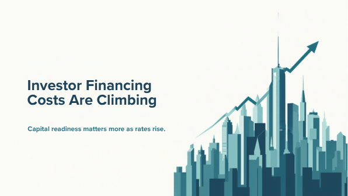
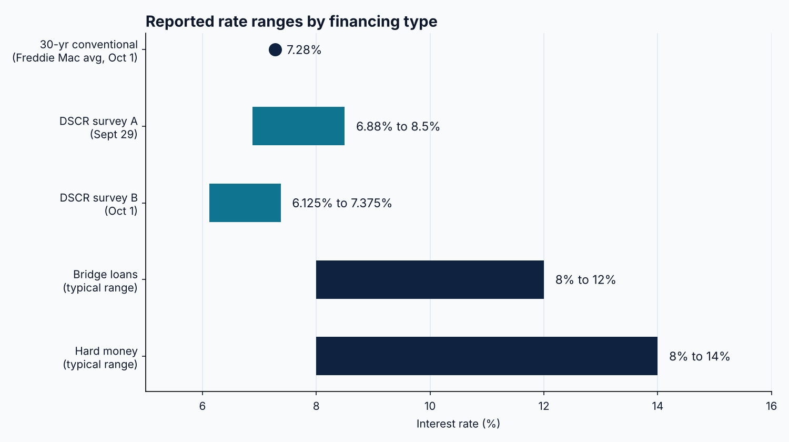

30-Year Rates Hit 7.28% as DSCR Quotes Run From 6.125% to 8.50%

Freddie Mac's Primary Mortgage Market Survey, released October 1, 2026, put the average 30-year fixed mortgage rate at 7.28%, up from 7.03% the prior week and 6.34% a year ago. The survey reported it as the highest reading since November 2023. The 15-year fixed average was 6.6%. For investors who benchmark every acquisition against conventional pricing, the cost of the baseline has moved materially in a single week.
DSCR loan pricing is published by individual lenders and varies with the survey. One indicative DSCR rate sheet, effective September 29, 2026, showed a range of 6.88% to 8.50%. A second survey, dated October 1, 2026, listed 30-year fixed DSCR rates of 6.125% to 7.375%, with a typical borrower profile (720 FICO, 75% LTV, DSCR of 1.00 to 1.24) near 6.75%. Both sources note that pricing depends on credit score, LTV, the property's DSCR, prepayment terms, and property type, which explains much of the gap between them.

Private financing sits well above both. A lender published guide cites typical bridge loan rates of 8% to 12% and hard money rates of 8% to 14%, generally on interest-only terms. That guide is dated May 2025, so these figures should be treated as general ranges rather than current quotes. The comparison still frames the decision: a bridge or hard money position must be refinanced into longer-term debt, and the refinance rate that applies today is higher than it was a week ago.
Macro timing adds one more variable. The Federal Reserve's next FOMC meeting is scheduled for October 27 to 28, 2026, with the policy decision due on October 28 at 2:00 PM ET. Deals under review this week will likely close, or be refinanced, around that date, so rate assumptions in underwriting should carry a margin rather than a single point estimate.
For lenders, the same spread logic applies in reverse. Wider published ranges mean borrower files are being sorted more finely by DSCR, LTV, and liquidity, and complete, comparable files move faster through that sorting. A lender screening a pipeline this week is effectively asking the same three questions of every file: whether rental income covers debt service, whether leverage fits the program, and whether the borrower can fund the closing costs and reserves. Files that answer those questions up front reduce back-and-forth when pricing is moving.
The data this week points in one direction for the benchmark and in several directions for investor loans. Investors and lenders evaluating deals should confirm current quotes directly, stress the underwriting against the upper end of the published ranges, and revisit assumptions after the October 28 Fed decision.